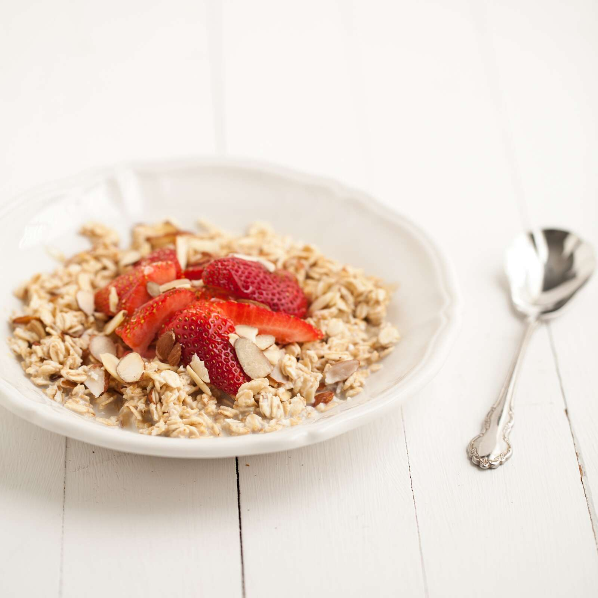

previous
home
next
Classic Overnight Oats

Description
A fantastic grab-and-go breakfast that is easy and incredibly versatile.
- Prep time: 8 minutes
- Cook time: 0 minutes
- Servings: 1
Ingredients
- 85 mL (1⁄3 cup) lower fat plain yogurt
- 85 mL (1⁄3 cup) large flake oats
- 85 mL (1⁄3 cup) lower fat milk, unsweetened fortified soy beverage or water
- 125 mL (1⁄2 cup) frozen strawberries
- 2 mL (1⁄2 tsp) cinnamon
Steps
- In a medium-sized bowl, whisk together all ingredients (except strawberries). Spoon into a jar or container with a tight-fitting lid.
- Refrigerate for at least 4 hours, but preferably overnight before eating. Top with strawberries when ready to serve.